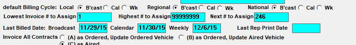
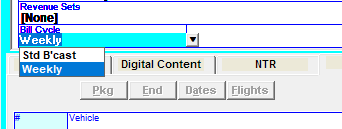
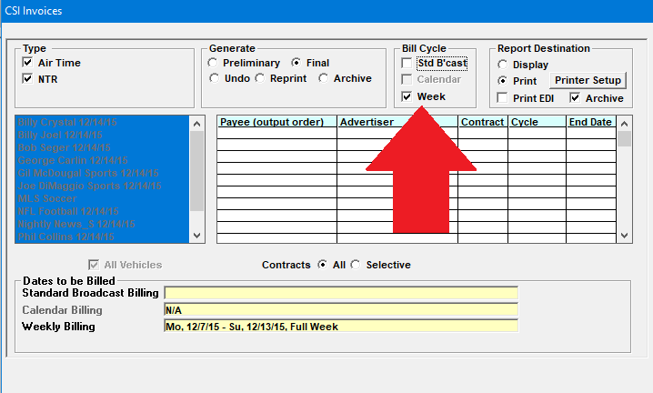
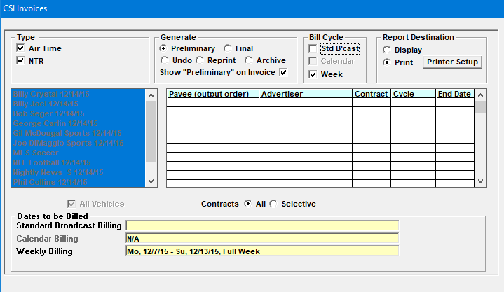
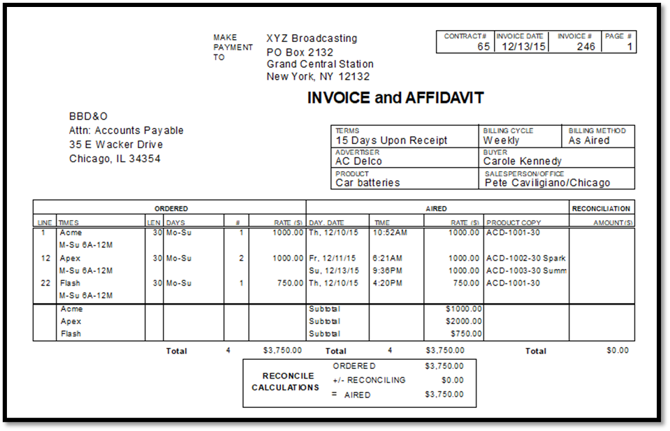
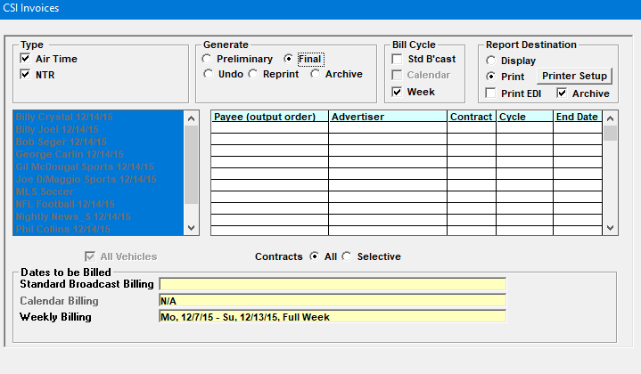
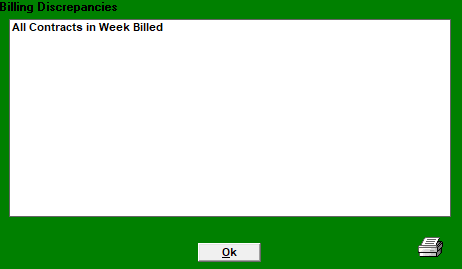
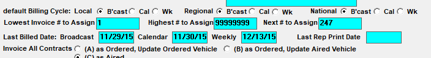

Weekly Billing
The Weekly Billing feature allows contracts to be billed weekly, as opposed to being billed once a month at the end of the standard broadcast month. When using the Weekly Billing feature, weekly invoices are generated each week, for each Monday through Sunday week of the month, as a separate process from generating the monthly invoices.
In many ways, invoicing contracts on a weekly billing cycle works very similarly to billing contracts on a standard broadcast month cycle, in that the regular final invoice procedures and check utilities and reports are still run. EDI and PDF invoice emails are also supported with weekly billing. Two major differences however are that contracts set to the weekly billing cycle cannot use installment billing, and rep contracts are also disallowed from being set to the weekly billing cycle.
Weekly Billing Setup Instructions
Follow the instructions in this section to set up the weekly billing cycle feature.
Note: you will need a keycode from Counterpoint to make changes to Traffic Site Options.
To activate weekly billing, go to Traffic Site Options -> Options -> Proposal/Order Options, and check on the “Weekly Billing” checkbox.
Next, determine what week you wish to start weekly billing from. Once that has been determined, on the Site Options Invoice tab, in the “Last Billed Date: Weekly” field, enter the date of the Sunday before the week from which you wish to start weekly billing.

For example, in the picture above, the “Last Billed Date: Weekly” date is set to 12/6/15. That means weekly billing will start from 12/7/15 (it starts from the day after the last billed date), and the first time weekly invoices are run, it will be for the week of 12/7/15 through 12/13/15 (Monday through Sunday).
The last billed date (weekly) shown in Site Options will be automatically advanced when you run final weekly invoices. Continuing with the example above, after running final invoices for the week of 12/7/15, the last billed date (weekly) will advance to 12/13/15, so that the next time you run final weekly invoices, it will be for the week of 12/14/15-12/20/15. (This is similar to the way the last broadcast month bill date advances when monthly invoices are run.)
Contract Entry
When weekly billing is activated, during the contract entry procedure, on both the Proposals and Orders screen, a new field labeled “Bill Cycle” will be available in the contract header area.
To set a contract to use the weekly billing cycle, select “weekly” from the “Bill Cycle” dropdown, as shown in the picture below.

In general, contracts can be set to use either the weekly billing cycle, or the standard broadcast billing cycle (the default), although there are a couple special rules that affect this setting. If a contract has already been billed on one cycle or the other, the billing cycle cannot be changed. In addition, if a contract was on the standard broadcast billing cycle and had not been invoiced, but there are spots ordered on the contract that are in a week that has already been invoiced as part of the weekly billing cycle invoice procedure, then that contract cannot be changed to the weekly billing cycle, as doing so would create a situation where there were spots on the weekly billing cycle that would never get invoiced. The best practice is to determine at the time of contract entry what billing cycle the contract should be on, and to set it to use that billing cycle at that time.
Invoice Procedure
The standard invoice procedure described earlier in this document should be followed when running weekly invoices, but using the weekly billing cycle option on the Invoice screen.
The weekly billing cycle can be selected on the invoice screen by checking the “week” checkbox in the “Bill Cycle” field (as shown in the picture below).

Weekly Invoice Check Procedures
The standard invoice procedure involves running the check procedures, including the Paperwork Summary report, the Contracts Missing Copy report, the Missing ISCI Codes report, the Missed Spots report, the Spot Discrepancies, and the following utility programs: SSF Check, SMF Check, CFF Check, and Sports Contract Check, to verify the integrity of the data before running invoices. For more information on these tasks, see the Month End Check Procedure.
Preliminary Invoices
Preliminary invoices should also be run to proof the weekly invoices prior to running the final invoices.
To run preliminary invoices, first select “air time” and/or “NTR”, then select the “Preliminary” radio button, then from the Bill Cycle field, uncheck “Std B’cast” and select “Week”, so that the invoices that are generated are for those contracts that are set to the weekly billing cycle (and for the current week being invoiced). Note that the dates being invoiced will be shown at the bottom of the screen in the “Weekly Billing” dates area.

Finally, choose whether to Display or Print the invoices, and then press Generate.
An example weekly invoice is shown below. It is nearly identical to a standard invoice, except that the billing cycle in the header area shows the word “Weekly” to indicate that the contract is on the weekly billing cycle, and as it is for one week, only those spots that are applicable to the billed week are shown, unlike a contract on the monthly billing cycle, where the entire month of spots is shown.

For more information on preliminary invoices, see Preliminary Invoices.
Final Invoices
Once the reports and check programs have been run, and the preliminary invoices have been reviewed and any needed corrections have been made, and you’re ready to run final invoices for the week, you can begin the final invoice process.
When running final invoices for contracts on the weekly billing cycle, select the “Week” radio checkbox and uncheck the “Std B’cast” checkbox. (Note: it is possible to run invoices at the same time for contracts on the weekly billing cycle and contracts on the standard broadcast billing cycle, but for the purposes of these instructions, the focus is on running invoices for the different billing cycles separately, because that is the most common scenario).
The picture below shows an example of what the invoice screen will look like when running final invoices for the weekly billing cycle. Take note of the “Weekly Billing” dates shown at the bottom of the screen. It shows the week dates that will be invoiced. In the example below, the “Standard Broadcast Billing” dates are blank, because only weekly invoices are being run in this example.

When pressing Generate, the system will check for completed proposals and unscheduled orders. Completed proposals and unscheduled orders must be handled prior to running final invoices. Completed proposals must be changed to unscheduled orders and scheduled or changed to an unapproved proposal. Unscheduled orders must be scheduled. Once that has been completed, the final invoice process can be run to completion.
At the end of the final invoice process, the green “billed” screen should appear. It will show “All contracts in week billed” as only the contracts applicable to the billed week are billed during this process (when running final invoices for the weekly billing cycle only).

If invoices did not complete successfully, a red “unbilled” screen will appear. If you see this red screen, contact Counterpoint support for assistance.
After final invoices have been run for the week, the last weekly billed date that is tracked and displayed in Traffic Site Options will be advanced, so that the next time weekly invoices are run, it will be for the next week. For example, after invoicing the week of 12/7/15-12/13/15, the last weekly invoice date is changed to 12/13/15 (as shown in Traffic Site Options), and the next time weekly invoices are run, it will be for the week of 12/14/15-12/20/15.

The picture above illustrates that after running final invoices for the week of 12/7/15, the last weekly billing date is set to 12/13/15 in Traffic Site Options.
In this way, by running invoices each week for contracts on the weekly billing cycle (and again at the end of the month for contracts on the monthly billing cycle), all invoices – both those on the weekly billing cycle and those on the standard broadcast billing cycle – will be billed.
Reprint and Undo
Reprint and Undo invoices can also be run for invoices created on the weekly billing cycle, following the standard procedure.